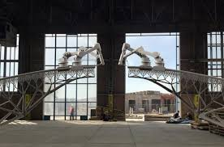

3D printing, also known as additive manufacturing, is a method of creating a three dimensional object layer-by-layer using a computer created design. 3D printing is an additive process whereby layers of material are built up to create a 3D part. As a result, 3D printing creates less material wastage. The process of 3D printing makes it easier for designers to create complex designs, and unlike with traditional processes, 3D printed parts and prototypes can typically be produced in hours (rather than days or weeks), allowing companies to move through design cycles faster and more efficiently. 3D printing is used to produce architectural scale models, enabling a faster turnaround of the scale model and increasing the overall speed and complexity of the objects produced. 3D Printing can produce different objects without creating specific tooling or even using several tools. This is how 3D Printing helps increasing flexibility in the production flow and helps reducing industrial expenses. Though initially developed for product prototyping purposes, 3D printing technology has advanced to the point where it has emerged as a key player in a variety of industries. While clearly, 3D printing technology has proven beneficial in the medical, aerospace, and tool-making arenas since its inception, there’s one other field that’s potentially poised to break out: the construction sector.
Prior to the adoption of building information modeling(BIM), 3D printing was even used by architectural firms to build scale models. It wasn’t long before it was administered for more ambitious construction purposes. 3D printing in construction can either involve the use of a 3D printer attached to an arm which actively builds a project on-site or the use of printers in a factory which create components of a building project that are assembled later. The printer then injects material on a platform according to that plan. A few available technologies of 3D printing used in the construction industry are: Robotic arm extruders, Sand 3D printing and Metal technology.